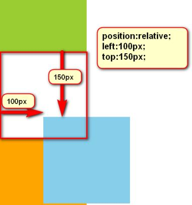
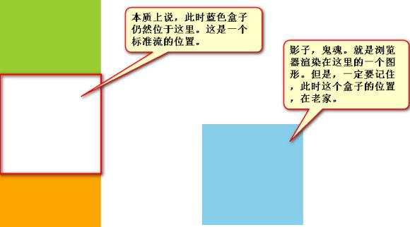
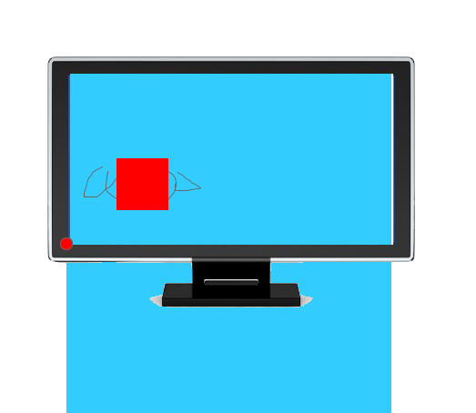
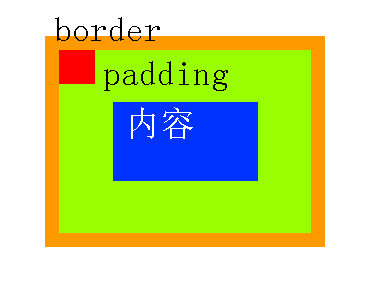

石婉茹
我的名字：石婉茹
QQ:2829339528
wechat:ww28052
敢问路在何方&&路在脚下
95后/本科在读/轻生活/轻梦想
石婉茹
我的名字：石婉茹
QQ:2829339528
wechat:ww28052
敢问路在何方&&路在脚下
95后/本科在读/轻生活/轻梦想
静态定位，无特殊定位，是HTML元素默认的定位方式，即不设置元素的position属性时，默认的position值为static，遵循正常的文档流对象，对象占用文档空间，top、right、bottom、left、z-index等属性是无效的。
相对定位，就是微调元素位置的。让元素相对自己原来的位置，进行位置调整。

如果一个盒子想进行位置调整，那么就要使用相对定位
相对定位不脱标，真实位置是在老家，只不过影子出去了，可以到处飘。

相对定位有坑，所以一般不用于做“压盖”效果。页面中，效果极小。就两个作用：
<1>微调元素
<1>做绝对定位的参考，子绝父相
用left、right来描述盒子右、左的移动
用top、bottom来描述盒子的下、上的移动
负数就是相反的方向
绝对定位比相对定位更灵活
绝对定位的盒子，是脱离标准文档流的。所以，所有的标准文档流的性质，绝对定位之后都不遵守了。
绝对定位之后，标签就不区分所谓的行内元素、块级元素了，不需要display:block;就可以设置宽、高了
绝对定位的参考点，如果用top描述，那么定位参考点就是页面的左上角，而不是浏览器的左上角：
如果用bottom描述，那么就是浏览器首屏窗口尺寸，对应的页面的左下角

一个绝对定位的元素，如果父辈元素中出现了也定位了的元素，那么将以父辈这个元素，为参考点。
要听最近的已经定位的祖先元素的，不一定是父亲，可能是爷爷
不一定是相对定位，任何定位，都可以作为参考点
子绝父绝、子绝父相、子绝父固，都是可以给儿子定位的。但是，工程上子绝、父绝，没有一个盒子在标准流里面了，所以页面就不稳固，没有任何实战用途。工程上，“子绝父相”有意义，父亲没有脱标，儿子脱标在父亲的范围里面移动。
绝对定位的儿子，无视参考的那个盒子的padding。
绿色部分是div的padding，蓝色部分是div的内容区域。那么此时，div相对定位，p绝对定位。p将无视父亲的padding，在border内侧为参考点，进行定位：

绝对定位之后，所有标准流的规则，都不适用了。所以margin:0 auto;失效。
left:50%; margin-left:负的宽度的一半进行居中
固定定位，就是相对浏览器窗口定位。页面如何滚动，这个盒子显示的位置不变。固定定位脱标！
IE6不兼容。
z-index值表示谁压着谁。数值大的压盖住数值小的。
只有定位了的元素，才能有z-index值。也就是说，不管相对定位、绝对定位、固定定位，都可以使用z-index值。而浮动的东西不能用。
z-index值没有单位，就是一个正整数。默认的z-index值是0。
如果大家都没有z-index值，或者z-index值一样，那么谁写在HTML后面，谁在上面能压住别人。定位了的元素，永远能够压住没有定位的元素。
从父现象：父亲怂了，儿子再牛逼也没用。